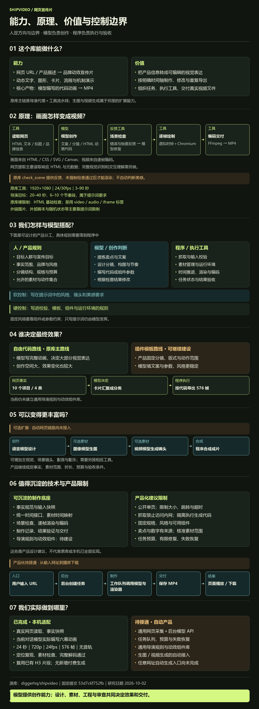
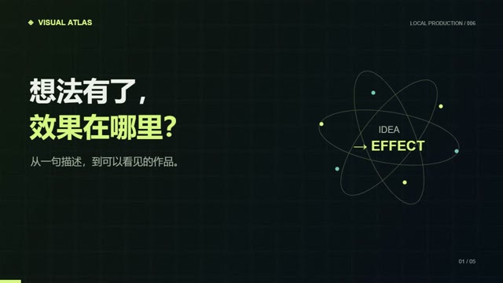
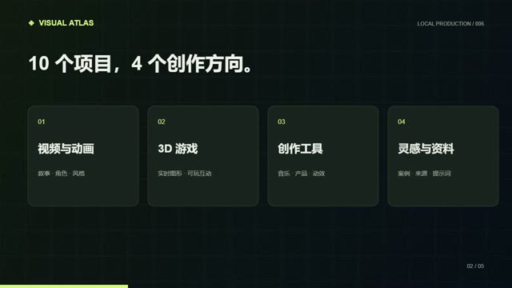
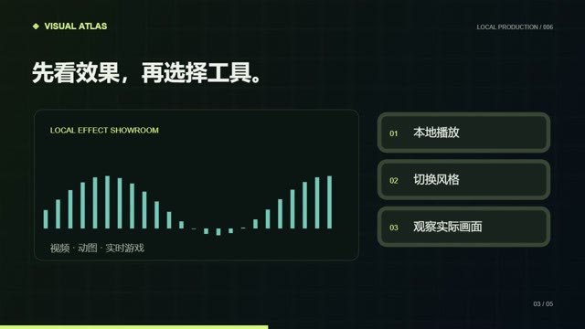
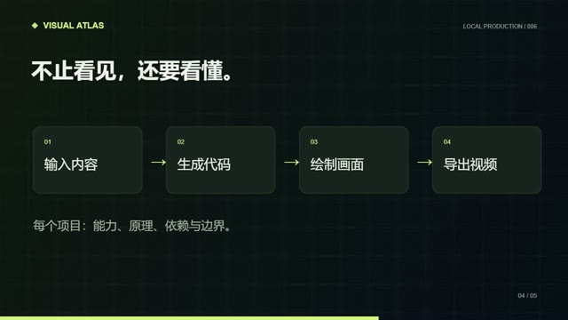
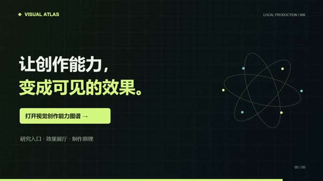

第一幕：把想法变成作品
- 网页事实
- 首页标题是“从一句想法，到一段可见的作品。”
- 模型的创作决定
- 把标题改写成两行短句，使用大字揭示、旋转图形和品牌色，先建立观看目标。
- 程序的执行
- 按 t 计算文字位置和图形角度，浏览器绘制，再逐帧编码；编码器不决定文案与构图。
0–4 秒 · 帧 0–95
先提炼产品卖点，再让模型编写一个会按时间变化的动画网页。浏览器画出每一帧，FFmpeg 将这些帧编码为视频。这次已用当前对话模型为真实的能力图谱制作一支六幕宣传片：下面直接播放结果，并逐幕说明模型决定了什么。
将这次讨论汇总为一张图：从源库的制作链路，到人的创作边界、模型的决定、程序的控制，再到值得沉淀的技术与产品化缺口。原库、本机已实现、可选扩展和待建设分别标注。

输入就是现有 Visual Atlas 网页。当前对话模型读取内容、决定六幕分镜、编写新动画代码，再由本机 Chromium 和 FFmpeg 导出下面这支 MP4。参考源库的代码动画制作方法，使用我们已有的模型和渲染能力。
24 秒 · 1280 × 720 · 24fps · 576 帧 · 无音轨。片内演唱为已有 H3 五秒试验的画面摘取；本次没有新增人物生成。
0–4 秒 · 帧 0–95
用第二幕理解分工：网页只提供“10 个项目、4 个方向”。模型决定先列出项目，再让它们汇聚为分类卡片；程序按照代码计算位置并画出运动。重新编码同一份代码会得到同样的编排，修改视觉创意需要修改这份场景代码。
例如网页上写着“10 个项目、4 个创作方向、可以本地看效果”。制作时先挑出这些信息，再决定它们在哪一幕出现、用多大的字、配什么图形和动作。动画可以表现流程、计数器、卡片或请求流，不要求使用人物。
提炼内容、选视觉表达、编写完整动画文档，并根据检查反馈修改。源库代理选择的模型名称记录在 agent.ts 中。
运行 HTML / CSS / SVG / Canvas，在指定时刻输出画面。画面能重绘，不依赖电脑恰好在真实时间运行到哪一秒。
接收图像帧，编码 H.264 MP4。视频的文案、构图和运动来自场景代码；编码器不替设计者决定内容。
与 MV 的区别：MV 多了角色表演、口型和生成素材的组合。这个宣传片源码的核心是“模型编写动画代码”，没有视频生成模型环节。两者都可以使用统一时间轴和本地编码。
此项为原作来源或未选的本机材料。公开页提供来源与版本说明。
查看作者样片来源 ↗源码示例清单记录的输入为 nvidia.com。样片此前已保存到本地研究；公开版通过作者来源查看，没有提交新任务。
输入为我们的能力图谱。由本次本地制作编写 Canvas 五幕，再逐帧编码。未运行 Shipvideo 的云代理。





上方抽帧来自已有 MP4。它们能说明每幕的画面内容，转场与阅读节奏仍需要播放判断。
源库的 agent.ts 提示词偏向短促的动态排版：先强调大字和图形，少量主色，一幕一个信息点，表现产品的工作机制。默认目标是 20–40 秒、6–10 个节奏段；这些是创作指令，工具的可用时长范围另有定义。
从网页取得产品名、能力与真实数字；用文字、流程框、计数器等表达。简化画面和配色，限制同时出现的文字量，安排开场、产品介绍、机制与结尾。
这说明源库选择了一种品牌动效方向。要制作另一种方向，需要重新设计提示词、分镜和场景代码；当前工具约束也要一起核对。
场景工具会拒绝 audio、video、iframe 元素。外部图片、外部脚本、随机状态与 CSS transitions 主要由导演提示词禁止，不能把所有提示词要求都称为程序强制校验。
原库允许 Google Fonts。我们本地场景使用系统字体，当前播放和预览不加载外部字体；可用字体变化也会影响视觉效果。
先让观众理解“为什么要看”。
十个项目与四个方向。
本地播放、切换、观察。
输入 → 代码 → 绘制 → 视频。
打开能力图谱。
我们的样片是另一次本地创作：采用五幕、24 秒、Canvas 和系统字体。它验证了代码动画的执行链路，没有逐项照搬源库的 6–10 段导演规则，也没有复刻原作者的每个转场。
拖动下面的帧滑块，预览会读取现有 launch.js 在对应时刻绘制。可以来回拖动，不会生成新的视频，也不调用模型。
当前第 3 幕：效果体验。
这里的 iframe 只用于研究页装载本地预览，不在导出的宣传片场景里。样片最后编码帧为 575 / 24 ≈ 23.958 秒，整段视频时长 24 秒。
// 本地场景接口，单位为秒
t = frame / 24
window.__seek(t) → draw(t)
frames = ceil(24 × 24) = 576launch.js 中的位置、透明度、文字与图形由 t 计算，渲染器对每一帧调用这个接口。它没有移植原库对 Date、定时器与 CSS 动画的整体虚拟时钟。
renderer.ts 在页面脚本运行前注入时钟，统一推进 rAF、定时器、Date 与 CSS / WAAPI 动画，再截图。原库的 seek 参数用毫秒；本地 Canvas 用秒，适配时不能混用。
该固定版本的虚拟时钟单调向前推进。回到更早时刻需要重新建立场景或另外设计重置机制；本页的来回拖动依靠本地 draw(t) 直接重绘。
// 解释性的帧渲染流程，非源库逐行复制
for each frame i:
advance_scene(i × 1000 / fps)
image = screenshot()
send(image, encoder)这里没有 makevoid 那样的 SKILL.md 制作入口。导演代理在 agent.ts 中定义模型、创作规则与工具，前端创建会话并查询结果。它的制作方法可以适配成我们自己的 Skill 或本地流程，但不能据此称原插件已安装。
| 源码模块 | 实际责任与边界 | 我们可替换成什么 |
|---|---|---|
导演代理opencomputer/agents/director/agent.ts | 选择 anthropic/claude-opus-5.5，读取 URL / 描述任务，编写场景并调用检查与渲染。 | 由当前代理执行内容规划、编写本地场景；无需为了学习流程部署原云服务。 |
网页读取tools/web.ts | 读取返回的页面文本，提取标题、描述、H1–H3、出现的十六进制色值与 Google Fonts；不是完整网站操作录屏。 | 本地 HTML 解析与已保存的品牌资料；任意 URL 的自动采集尚未接入。 |
场景检查tools/scene.ts · check_scene | 按多个时刻查看运行错误、网络失败和可见 DOM 文本。Canvas 文字不属于 DOM 文本，检查结果不能代替画面审查。 | 保存分镜抽帧、运行错误与人工复核记录；当前未复刻完整自动检查工具。 |
渲染与编码tools/renderer.ts | 1920 × 1080，默认 30fps，工具也接受 24fps；Chromium 逐帧输出 JPEG，FFmpeg 编码 H.264。 | 已有 1280 × 720 / 24fps 的本地渲染器；适配明确的时间接口。 |
任务启动web/src/app/api/jobs/route.ts | 验证 URL / 描述，创建会话、等待运行环境连接，再发送带任务编号的制作指令。 | 若要做成输入网址即可生成的产品，需要新增任务服务、状态和失败恢复。 |
状态与交付web/src/app/api/jobs/[id]/route.ts · lib/oc.ts | 根据工具事件报告阶段，并检查会话工作区中的 videos/<job>.mp4，取得下载签名。 | 本地状态文件与完成后的本地媒体 URL；网页不能直接放生成密钥。 |
版本核对更新：当前新任务由会话工作区交付视频，没有调用 Vercel Blob 作为新任务输出。examples.ts 中已有的样片仍使用 Blob 地址，属于示例媒体集合。本机研究副本继续保留；公开版通过作者来源查阅这些原作。
早期制作读取能力图谱 HTML，保存简报并设计五幕 Canvas；本次制作重新读取真实网页并设计六幕。两支样片各为 24 秒、576 帧，均已有播放文件、源码和导出记录；最新六幕详见本页“这次实际制作”。
尚未建立通用 URL 采集、模型任务接口、源库虚拟时钟移植、自动场景检查、在线队列与工作区交付。现在的网页用于研究和预览，不会在输入网址后自动提交生成。
原源码场景排除音频元素，视频帧编码流程也没有加入歌曲。我们当前样片无音轨；配音、配乐与字幕可以作为后续独立模块设计。
本页源码研究完成与本机渲染已运行是两项证据。它们不代表原 Shipvideo 云应用已经部署，也不代表新的任意 URL 生成入口已经可用。
每条卖点和数字记录来源，保存品牌色、可用字体与用户选择的宣传目标。动态网站抓取与外部 CSS 提取需要单独适配。
先输出文案和段落范围，再编写动画。保存关键时刻的画面、错误与修改记录，检查文案准确、可读性、遮挡和节奏。
统一时钟单位和帧率，明确纯 Canvas 与通用 HTML 的渲染契约；保存完成状态、成片和可选音轨，再接一个真正的制作入口。
两项能力的研究入口：歌曲 → MV：创作主体、六条路线与实际 H3 试验；本页是网页 → 宣传短片。首页已提供两个直达入口，样片与进度可以分别查看。